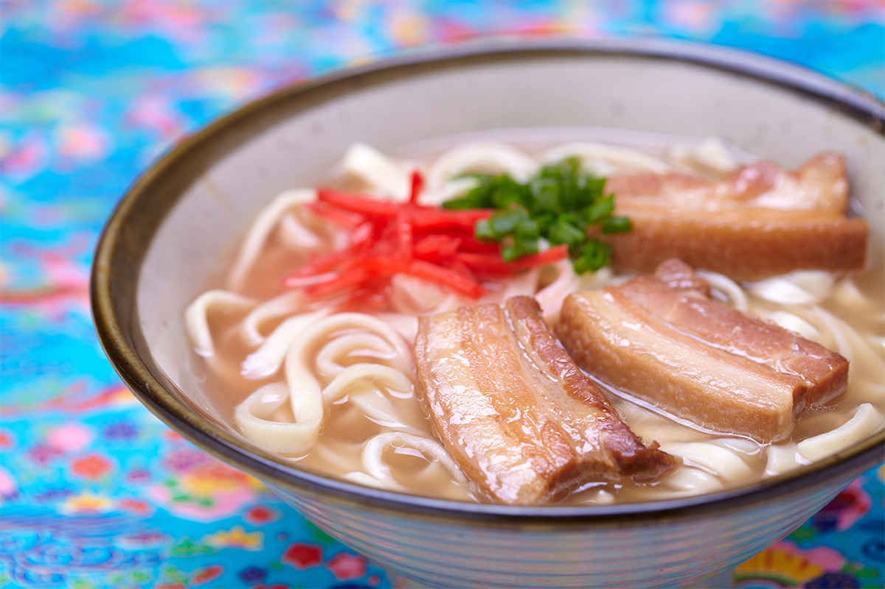
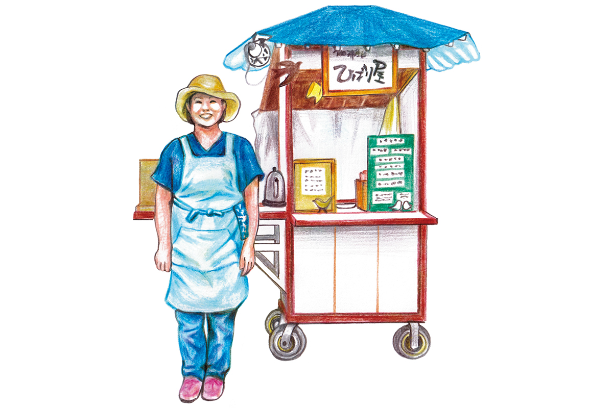
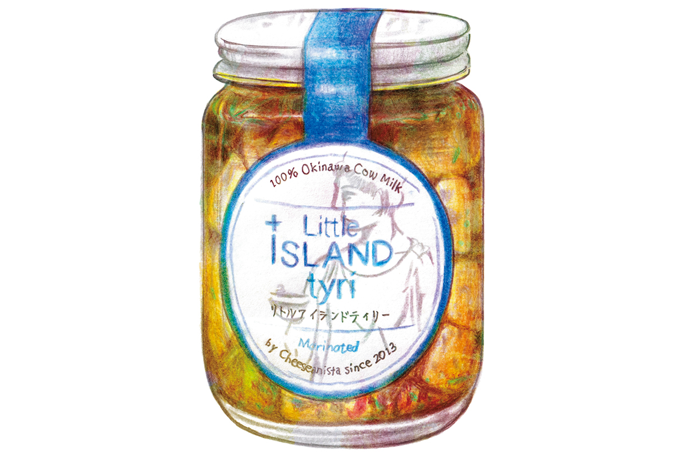

Префектура Окинава · Наха, Гинован, город Окинава · еда
Куда вести друзей на Окинаве: тур по закоулкам Нахи, кофе под шелковицей, бистро и сыр

Лучше всего Окинаву знают те, кто здесь живёт. Редактор Киёми Гон каждый год принимает друзей и родственников, и от неё всегда ждут одного: мест, где вкусно наверняка.
Проводник
Вкус, который запоминается целиком
Киёми Гон работает редактором и автором текстов. Вместе с мужем, дизайнером, она ведёт студию «Бахко», которая придумывает, редактирует и оформляет издания. На Окинаву она переехала около 2004 года, чтобы делать журнал об окинавском стиле жизни, а позже стала главным редактором местного журнала «Момото» с первого номера. В свободное время она квасит кимчи в бродильных кувшинах.
Жизнь на Окинаве, по её словам, хороша ещё и тем, что каждый год сюда приезжают друзья и родня. И каждый раз от неё ждут проверенных мест, где не ошибёшься. Вкусное воспоминание о поездке складывается не только из еды: в нём есть место, воздух вокруг и характер хозяина. Ниже места, куда она ходит много лет подряд.
Тур
«Окинава суро цуа»: закоулки Нахи и местная кухня
«Окинава суро цуа», то есть «медленный тур по Окинаве», ведёт знаток природы и народных обычаев острова. С ним можно пройтись по судзигва, узким переулкам Нахи, посмотреть на светлячков или отправиться за ятимун, окинавской керамикой, с проводником, который поможет с выбором.
После прогулки гостей ведут ужинать. Мать основателя тура родом с Окинавы, и с детства он полюбил местную домашнюю кухню. Он знает заведения, где особенно хороши чанпуру и ирити (жареные блюда), накамидзиру, суп из свиных потрохов, и тимусиндзи, отвар из свиной печени. А ещё водит в «сэмбэро», недорогие бары, где можно наесться и выпить примерно на тысячу иен. Их не найти в путеводителях, но уровень там высокий.
«Окинава суро цуа»
- Телефон
- +81 70-5691-3792
Кофе
«Хибария»: кофейная тележка под шелковицей
Совсем рядом с улицей Кокусай-дори лежит квартал Сакурадзака. Если пройти его переулками мимо одноэтажных баров, где поют народные песни, и караоке-идзакая, впереди покажется большое шелковичное дерево. Под ним стоит кофейня под открытым небом «Хибария».
В 2022 году кофейне исполнилось 18 лет. Около 2017 года она обосновалась на нынешнем пустыре, за которым присматривает местная кошка Марко. Хозяйка превратила его в цветущий сад: здесь распускаются мэйфлауэр, рюкюская леспедеца и дикие розы.

Кофе она заваривает неторопливо и тщательно, и у него глубокий вкус. Поклонники «Хибарии» есть и за границей: до пандемии хозяйку приглашали на кофейный фестиваль на Тайване. В солнечные дни работы у неё с утра до вечера.
«Хибария»
- Адрес
- префектура Окинава, город Наха, Макиси, 3-9-26
- Телефон
- +81 90-8355-7883
- Часы работы
- 10:30–19:00
- Выходные
- нерегулярные (в том числе в дождь)
Бистро
«Като сёкудо»: французская кухня под вино
Винное бистро «Като сёкудо» стоит в жилом квартале города Гинован. Меню здесь выстроено так, что сюда одинаково хорошо зайти и выпить под пару закусок, и поужинать по всем правилам: от холодных закусок и горячих блюд до мяса, рыбы и десертов.
Основа кухни французская, поэтому особенно удаются соусы. Под устрицы в соусе из шампанского или блюда в чесночном масле, как для эскарго, вино уходит само. Стейк с картофелем фри и баскские перцы пикильос пользуются таким спросом, что их стоит попросить отложить, когда бронируете столик.
В зале всегда шумно и весело, а за всем этим с улыбкой присматривают хозяева, муж и жена.
«Като сёкудо»
- Адрес
- префектура Окинава, город Гинован, Масики, 2-16-10
- Телефон
- +81 98-890-2055
- Часы работы
- 18:00–23:00
- Выходные
- среда, а также нерегулярные
Сыр
Cheeseanista: окинавский сыр в «Плаза хаус»
В городе Окинава находится «Плаза хаус», старейший торговый центр Японии. В нём работает сырная лавка Cheeseanista. Её хозяйка делает сыр каждый день и старается передать в нём окинавский терруар.

Маринованный сыр из молока коров префектуры Little Island tyri получил золотые медали на многих международных сырных конкурсах. Он мягкий и насыщенный, и Киёми Гон признаётся, что, попробовав его впервые, широко раскрыла глаза от удивления.
Познакомившись с фермером, который держит коз уже 40 лет, хозяйка наконец смогла выпускать козий сыр, о котором давно мечтала. От козьего сыра обычно ждут резкого запаха, но у этого аромат свежий, вкус глубокий, а соли ровно столько, сколько нужно. Густой процеженный йогурт хорош и как десерт. В подарок друзьям здесь берут набор закусок: сыр, греческие блюда и мясные деликатесы.
Cheeseanista
- Адрес
- префектура Окинава, город Окинава, Кубота, 3-1-9, торговый центр «Плаза хаус», 1-й этаж
- Телефон
- +81 80-8566-0802
- Часы работы
- 11:00–19:00
- Выходные
- вторник
Фото: kenken840; иллюстрации: Хитоми Иха.